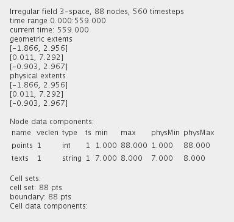
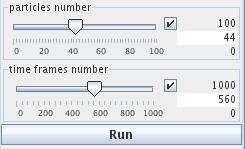

TEST POINTS FLOW
The module provides an example of an randomly generated time dependend irregular point field.
Output data
The output field is irregular 3-space in time.

Computation parameters

The user defines the number of particles in the particles number slider using either the slider or the text fields for minimum, maximum and current value on the right hand side of the slider, if the check box is on.
The number of time steps is defined in the time frames number slider either by the slider or the text fields for minimum, maximum and current value on the right hand side of the slider, if the check box is on.
Press the Run button tu run time field generation.
Presentation parameters
Presentation parameters are described in the common interfaces section under the Presentation Panel entry.